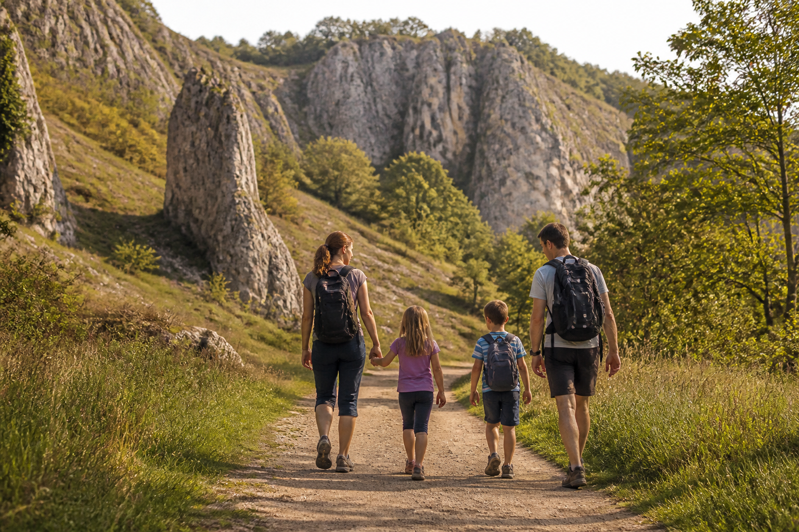
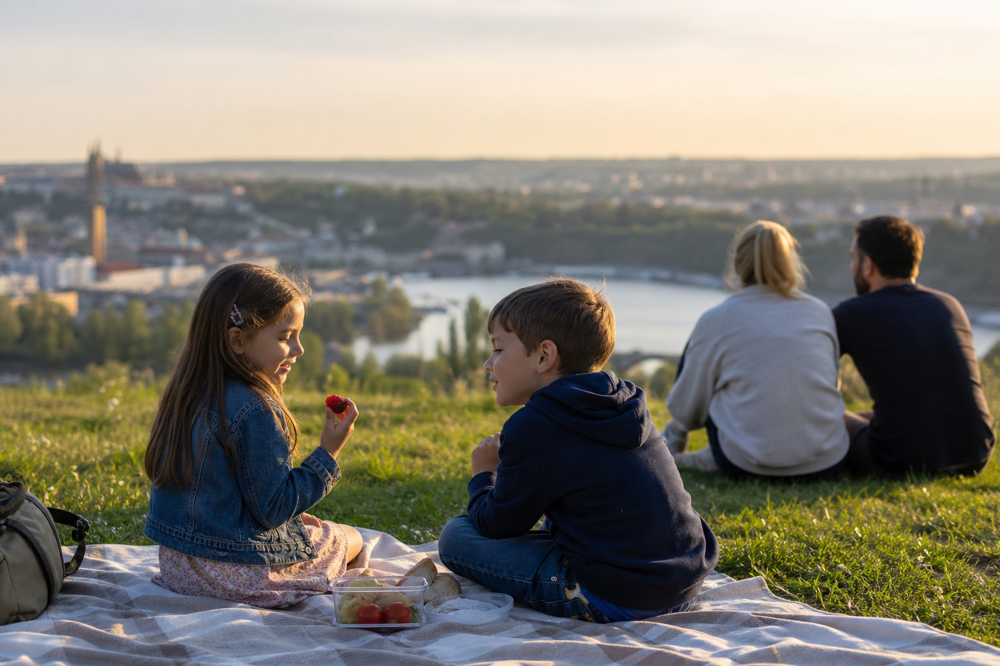

Praha s dětmi
Barrandov s dětmi: naše odpoledne, kdy jsme z Prahy na chvíli zmizeli
Barrandov jsme měli dlouho zaškatulkovaný jako místo, kam se prostě jede tramvají a zase se z něj jede pryč. Jenže pak jsme s dětmi vyrazili směrem k Prokopskému údolí a najednou jsme měli pocit, že jsme z Prahy zmizeli aspoň na půl dne. Skály, louka, cesta, kde děti konečně nemusíte každých pět minut honit mezi auty. Za mě super plán na víkend, když nechcete vymýšlet žádnou velkou výpravu.

Pro koho je Barrandov s dětmi fajn
Nečekejte dětský zábavní park na každém kroku. Tohle je spíš volné odpoledne pro děti, které se potřebují proběhnout, posbírat pár kamínků a mít pocit, že objevují něco vlastního. Menší děti zvládnou kratší kus cesty, větší už budou bavit skály a naučné zastávky. Prokopské a Dalejské údolí je celoročně volně přístupné, jsou tu turistické trasy, cyklostezka, pikniková místa i dětské hřiště. Aktuální trasu si ale před cestou radši koukněte na web Prague City Tourism.
Za mě: Neplánovala bych to jako výkon. Vyberte jeden kratší okruh, přibalte pití a svačinu a nechte dětem čas. My jsme nakonec nejvíc času stejně strávili tam, kde v mapě žádná atrakce nebyla.
Jak jsme si odpoledne poskládali
1. Pomalý start a cesta do údolí
Na Barrandov se dá pohodlně dostat městskou dopravou, takže auto jsme tentokrát vůbec nepotřebovali. To je mimochodem příjemné hlavně v den, kdy nechcete řešit parkování a pak děti přesvědčovat, že ještě kousek dojdou. Když ale jedete do Prahy na delší roadtrip a chcete si přejet i okolí, auto si můžete předem porovnat přes Discover Cars. Jen sem samotným bych ho za nás nehnala.
2. Skály, louka a tisíc zastávek po cestě
Prokopské údolí je přesně ten typ místa, kde se dospělí chtějí projít a děti mají pořád co dělat. Jen pozor: v chráněném území se držte cest, nenechte děti lézt všude po skalách a nepočítejte s tím, že každá část bude vhodná pro kočárek. S menšími dětmi bych šla opravdu jen po pohodlném úseku a otočila se ve chvíli, kdy je to ještě pohoda.
3. Piknik, který zachrání náladu
My jsme měli v batohu pečivo, ovoce a jednu malou sladkost na konec. Zní to jako maličkost, ale venku je to vždycky lepší plán než hledat restauraci ve chvíli, kdy už jsou všichni hladoví. A jestli pojedete do Prahy na celý víkend, ubytování si předem můžete vyfiltrovat přes Stay22 / Booking. Za mě je s dětmi fajn nebýt úplně na druhém konci města.

Co bych s dětmi na Barrandově už neplánovala
Hlavně bych tam netlačila moc věcí najednou. Když spojíte procházku, velký oběd, další přesun a ještě program v centru, je z toho akorát logistika. Barrandov funguje dobře právě tím, že je to normální volné odpoledne. Když vám zbyde energie na další den v Praze, mrkněte na vstupenky a výlety přes GetYourGuide, ale konkrétní aktivitu si vybírejte až podle věku dětí a aktuálního programu.
Prakticky na závěr
- Boty: Tenisky stačí na lehký úsek, po dešti bych ale nešla úplně nalehko.
- Kočárek: Držela bych se jen opravdu pohodlných cest. Terén si předem ověřte podle zvolené trasy.
- Jídlo a pití: Vemte si něco s sebou. Ušetříte si tím mraky nervů.
- Bezpečnost: Skály a chráněná příroda nejsou hřiště. Děti mějte v exponovaných místech u sebe.
- Ověřit před cestou: aktuální stav cest, případné uzavírky a provoz konkrétních míst.
Za mě je Barrandov dobrý připomínák, že s dětmi nemusíte pokaždé vyrážet někam daleko. Stačí jedna tramvaj, malý batoh a plán, který se klidně může po cestě úplně změnit.